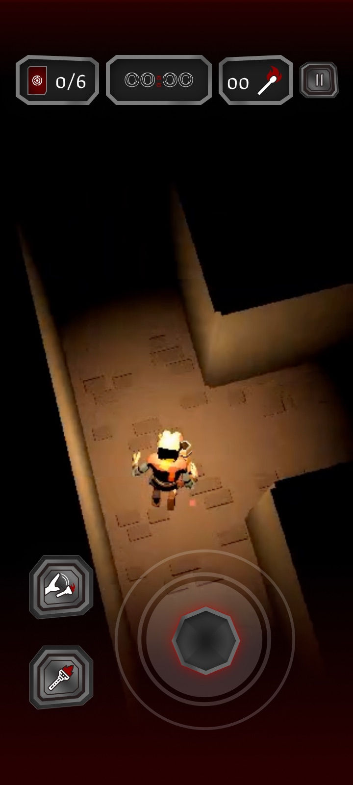

Metal button
Chamfered steel frame with a brushed face and white serif label. It is the only button style, used for every menu action.
Used in: menu, pause, dead, win, scoreboard
A top-down escape from a Minotaur that has memorised the maze. Your torch is both your eyes and your beacon. This page covers the interface: the screens, the UI kit and a playable prototype.


The scene is almost black, so the HUD borrows its look from the world: cold metal plates with a red glow, never bright panels that would give the player away.
Every control sits in the lower third, where a thumb rests: a floating stick and two torch actions. Counters live on top, out of the way of the hands.
Cards out of 6, time and matches are the only HUD readouts. Each has its own plate, so a glance tells the whole run.
Red outlined titles and a maroon fade set the tone for the menu and loss. A teal gradient on the win screen is the one cold, calm moment in the game.
The mobile screens the prototype is built from, in the order a run goes. Click any image to enlarge it.
The title, Start and Scoreboard over the idle hero. Tapping Start shows the intro, then the camera swings from the 3D view to top-down and the run begins.
Pause dims the HUD in red and offers Resume or Quit. The two endings have different moods: escape is cold teal, defeating the Minotaur stays dark red.
Position, date and time of the best twelve escapes, in a metal frame over the red menu.
The components the screens are assembled from. The prototype rebuilds them in code from these references.
Chamfered steel frame with a brushed face and white serif label. It is the only button style, used for every menu action.
Dark plates with a silver rim. Time uses the display face with ring-shaped digits and a red colon; cards and matches use the body face with a small icon.
A floating stick with a faceted knob and a red glow. The red arc shows the direction being held: up, right, down or left.
Charcoal panel with a grey frame and three centred columns. Light serif type keeps twelve rows readable.
Cards collected (a red card with a target mark) and the match counter with a lit match. The match turns the red of the flame.
#7A0000 titles, cards#2D0000 menu fade#080303 scene#8A8A8A frames#19A79A escapeTilt Prism for titles and the timer, a prismatic display face that looks carved. Texturina for buttons, counters and the scoreboard, a sturdy serif that stays legible at small sizes.
How a run moves through the screens. Pause and Retry always return to a fresh or resumed run, never to a dead end.
The prototype plays on the labyrinth from the game design document, rebuilt tile by tile from the map. White is corridor and grey is a larger chamber; the entrance is the stub at the bottom and the sunlit exit is the stub at the top. Cards and matches are scattered at random on every run.
A playable build of the whole interface, not a click-through. A small maze, a torch that lights only what is near, a roaming Minotaur, and all the screens above wired in the order of the flow.
Game and UI/UX design: David Smith.
Development: Bruno Poor.
Studio: Harpia Games, made for a game jam with the theme “Monster Escape”.
Game rules and story are in the game design document.
The quick-time event when the Minotaur attacks, the Exodia summon and the side-view camera are in the design but not in this prototype. Hiding places and traps are also left out, and the 1-tile corridors leave no room for the side camera yet.